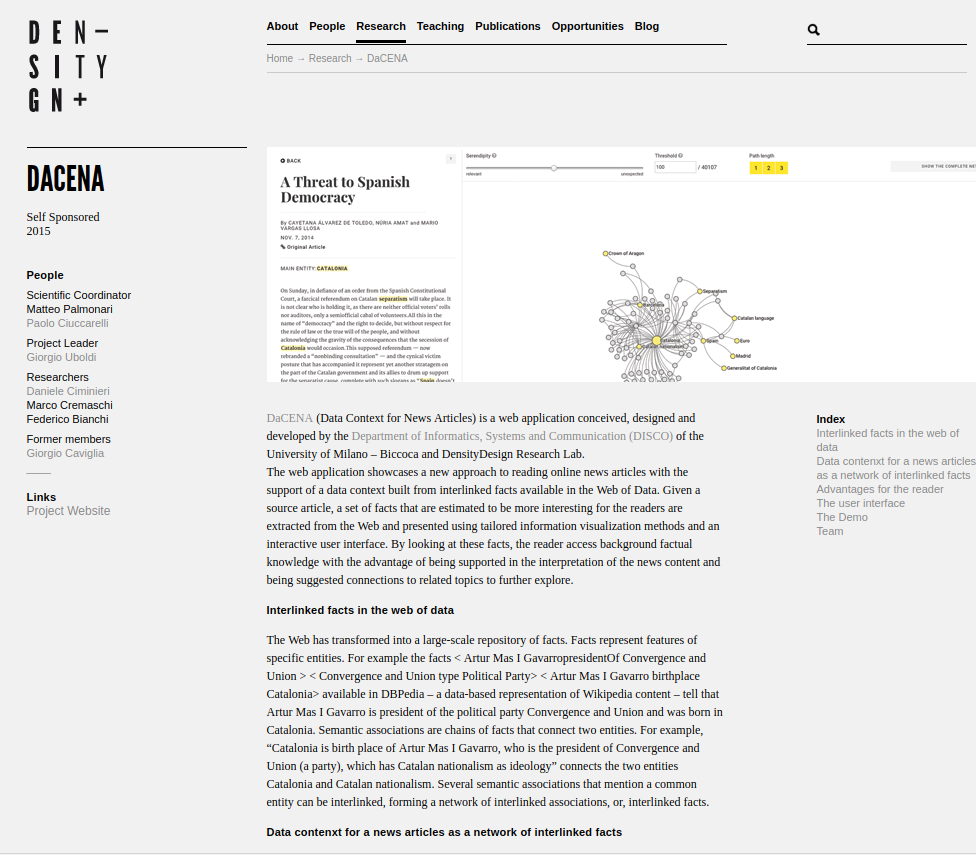

Bernie Sanders Endorsment
Sen. Bernie Sanders delivers his final endorsement of Hillary Clinton at the 2016 Democratic Convention. "I understand that many people here in this convention hall and around the country are disappointed about the final results of the nominating process," he said. "I think it’s fair to say that no one is more disappointed than I am." "This election is not about, and has never been about, Hillary Clinton, or Donald Trump, or Bernie Sanders or any of the other candidates who sought the presidency. This election is not about political gossip. It’s not about polls. It’s not about campaign strategy. It’s not about fundraising. It’s not about all the things the media spends so much time discussing."
Online Learning
User Association Score
| N | Source | First Property | Middle one | Second Property | Destination |
|---|---|---|---|---|---|
| 1 | Bernie_Sanders | R:birthPlace | New_York | L:region | Hillary_Clinton |
| 2 | |||||
| 3 | |||||
| 4 | |||||
| 5 | |||||
| 7 | |||||
| 8 | |||||
| 9 | |||||
| 10 |
Online Learning Association Score
| N | Source | First Property | Middle one | Second Property | Destination |
|---|---|---|---|---|---|
| 1 | Bernie_Sanders | R:birthPlace | New_York | L:region | Hillary_Clinton |
| 2 | |||||
| 3 | |||||
| 4 | |||||
| 5 | |||||
| 7 | |||||
| 8 | |||||
| 9 | |||||
| 10 |
Knowledge Graph

People
-
Andrea Angiolillo
a.angiolillo@campus.unimib.it -
Omar Belingheri
o.belingheri@campus.unimib.it -
Adam Khayam
a.khayan@campus.unimib.it
